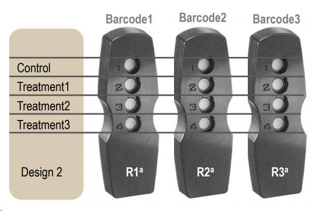
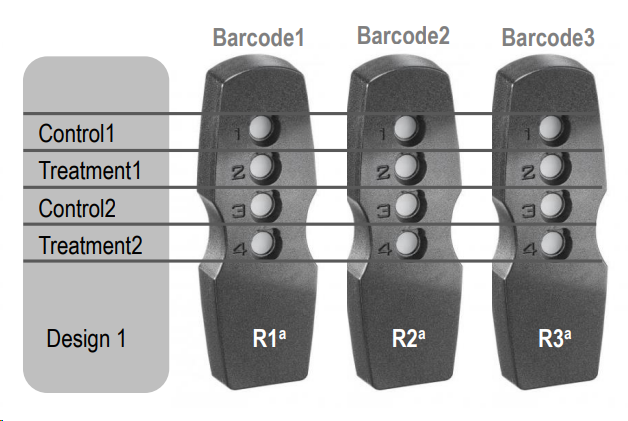
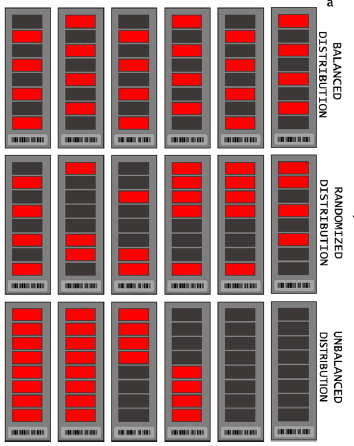
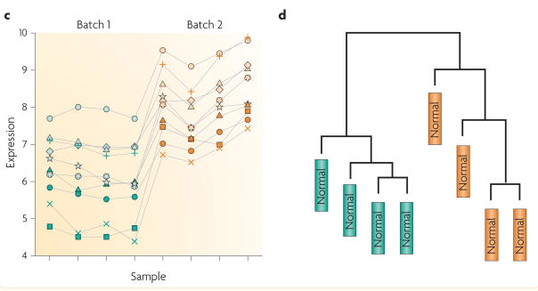

0. Experiment Design
Two basic experiment designs:
| Design | Description |
|---|---|
| C-T1T2T3 | Compare multiple Test conditions vs one Control |
| C1T1–C2T2 | Compare 2 model systems, each with its own Test and Control |


Number of replicates needed:
- Cell lines: minimum 3 replicates / condition
- Primary cell culture: minimum 6 replicates / condition
If the differences in conditions (e.g. treatments) is expected to be low, probably 3 replicates are not enough to show statistically significant differences.
Balanced Design
Batch effects are variations caused by technical variability due to time, place, and materials (e.g. runs, PamChips). Batch effects can confound real effects if the design is unbalanced which leads to false results.
For example, if all "Test" are in a different run or PamChip than "Control" samples, Test and Control cannot be compared, because there is no way to tell, which part of the difference is technical and which is biological.
A balanced design avoids confounding the effects of the covariates of interest with batch effects. Additionally, batch effects, when they exist, can also be corrected.


Reference: [Leek et al., 2010]
How comparisons answer research questions
Assume:
- two cell lines: a wild type (WT) and a knock-out (KO).
- Treatment (T) and untreated (DMSO-treated) Control (C).
Possible research questions and their answers:
- What is the test effect in WT? → T vs C in WT
- What is the test effect in KO? → T vs C in KO
- How is KO and WT different? → KO vs WT in Control (= KO-Control vs WT-Control)
- How is test effect in KO and WT different?
- → simple approach: compare results from questions 1 and 2 with Venn-diagram
- → better: compare the fold changes of specific kinases with a low specificity threshold.
Do not use KO-Test vs WT-Test comparison. The reason: KO-Test vs WT-Test does not isolate treatment-response differences because it mixes:
- baseline genotype differences
- treatment-induced genotype differences
The above comparisons are usually done on kinase-level data, the main output of PamDx experiments. Upstream Kinase Analysis is not a statistical test, so interaction effects cannot be calculated. That is why research question 4 is addressed in a simple way.
How to Make Sample Annotation
Main sample annotation factors:
| Factor | Description |
|---|---|
| Test condition | Describes the perturbation; what to compare (e.g. treated vs control). |
| Supergroup | The group within which the test conditions are compared. E.g. WT or KO cell or different tissues. |
| Sample name | Should be unique to the sample. |
| Biological Replicate (BR) | The biological subject, e.g. patient, mouse. In case of cell line, cells from different wells in a plate. |
| Technical Replicate (TR) | Replicates of one biological subject. |
| PatientID | If experiment has patients, for clarity, include the id. |
Example
| Barcode | Row | Supergroup ID | Supergroup | Test condition ID | Test condition | Sample name | BR |
|---|---|---|---|---|---|---|---|
| chip1 | 1 | Sgroup1 | Sgroup1_WT | Control | Control | Sgroup1_Control_01 | BR01 |
| chip1 | 2 | Sgroup1 | Sgroup1_WT | Test | Test_RAFi | Sgroup1_Test_01 | BR01 |
| chip1 | 3 | Sgroup2 | Sgroup2_KO | Control | Control | Sgroup2_Control_01 | BR01 |
| chip1 | 4 | Sgroup2 | Sgroup2_KO | Test | Test_RAFi | Sgroup2_Test_01 | BR01 |
| chip2 | 1 | Sgroup1 | Sgroup1_WT | Control | Control | Sgroup1_Control_01 | BR02 |
Naming Rules
Supergroup IDcolumn values should always be: Sgroup1, Sgroup2, ...Test condition IDcolumn values should always be: Control, Test, T1, T2, ...- Real names go in the
Supergroup,Test conditioncolumns - Have a
Supergroupcolumn even if there is only 1 supergroup (for clarity) - Keep names simple so they are visible on heatmaps.